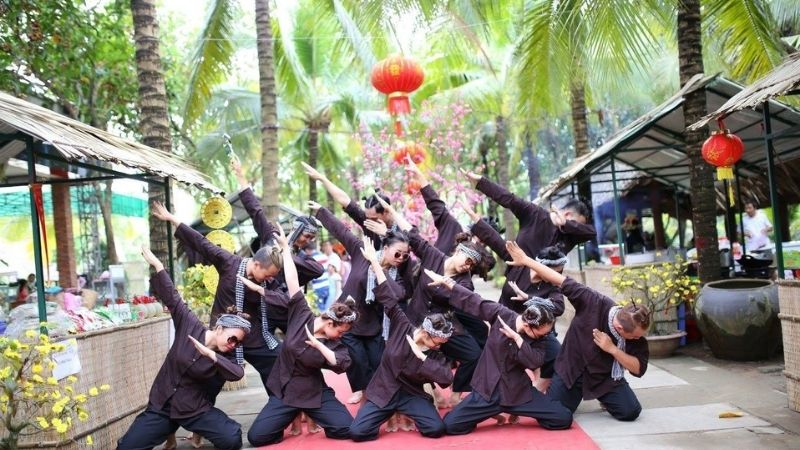
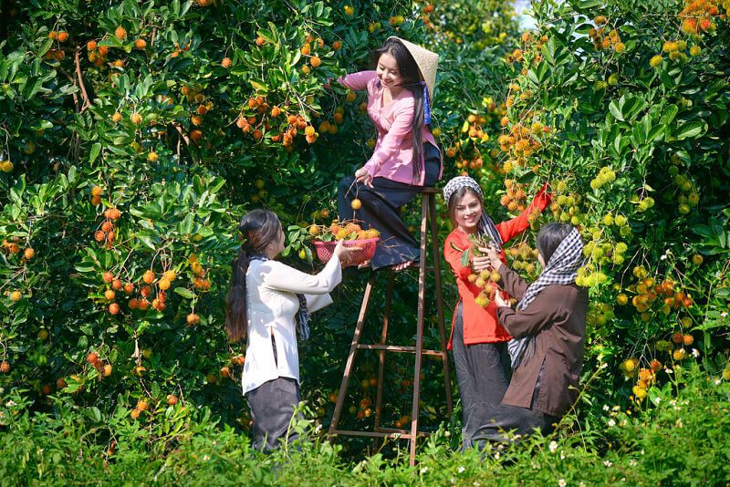
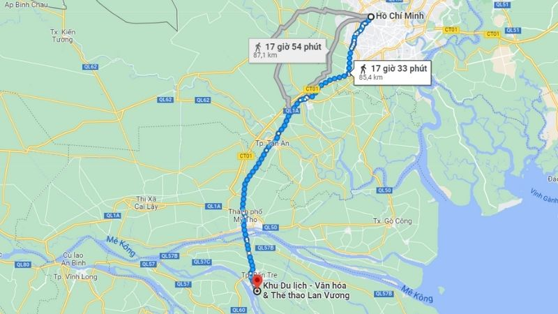
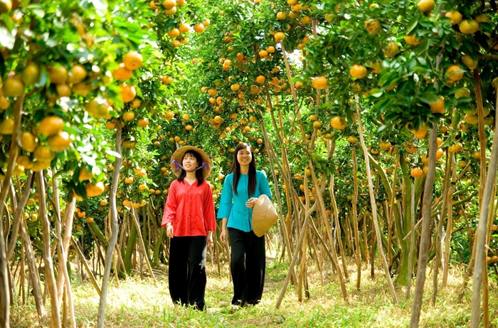
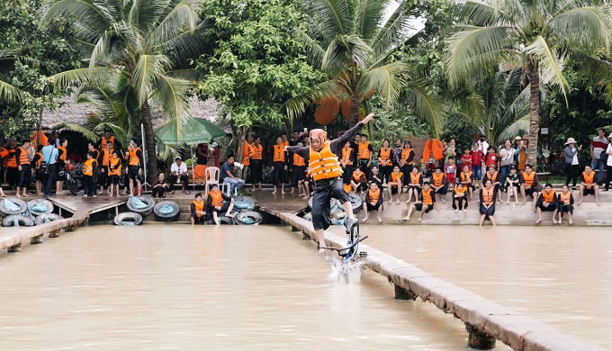

Khu du lịch Lan Vương là khu du lịch nổi tiếng Bến Tre, nên thu hút khách du lịch. Tham khảo cẩm nang vui chơi, review khu du lịch Lan Vương, Bến Tre nha.
Trước đây khu du lịch này chỉ là những mảnh ruộng hoang sơ và đã được cải tạo, xây thành khu du lịch Lan Vương như hiện tại. Nằm tại tỉnh lộ 887, thuộc địa phận ấp 2, xã Phú Nhuận, thành phố Bến Tre, khu du lịch Lan Vương cách thành phố Bến Tre khoảng 5km.
Đến với khu du lịch Lan Vương, du khách không chỉ được thưởng thức những đặc sản của Bến Tre mà còn được đắm mình vào với thiên nhiên rộng lớn và tham gia vào những hoạt động vui chơi giải trí gần gũi và thân thuộc.
Đây là địa điểm để mọi người có thể gắn kết lại với nhau hơn và cũng là một nơi thích hợp để dã ngoại, cắm trại cho gia đình, các nhóm bạn bè, nhân viên trong công ty.
Thời điểm thích hợp nhất để đi khu du lịch Lan Vương là vào tháng 6, 7, 8 vì đây là mùa khô nên các bạn sẽ được vui chơi thoải mái.
Đặc biệt, đây cũng là những tháng mà các loại trái cây bước vào mùa thu hoạch nên nếu đến vào thời điểm này các bạn sẽ được thưởng thức các loại trái cây thơm ngon.
Nếu đi từ Sài Gòn bạn sẽ mất khoảng 2 giờ đồng hồ để tới được Khu du lịch Lan Vương. Đây cũng là đường đi dành cho những người đi bằng xe máy hoặc ô tô.
Nếu bạn đi xe khách từ Sài Gòn - Bến Tre thì nên chọn những nhà xe uy tín với giá vé dao động từ 70.000 - 100.000 đồng/người. Khi đến bến xe, bạn có thể tìm taxi hoặc xe khách để đến bến đò qua KDL Lan Vương.
| Dịch vụ | Giá (VNĐ) |
|---|---|
| Combo: Cùng bà ba cười thả ga | Khoảng 70.000đ/vé |
| Thuê tủ để đồ | Khoảng 30.000đ |
| Thuê áo phao | Khoảng 15.000đ |
| Thuê võng | Khoảng 20.000đ |
| Thuê ghe chèo hoặc thuyền thúng | Khoảng 80.000đ/chiếc |
| Tát mương bắt cá ao nhỏ | Khoảng 500.000đ/ao |
| Tát mương bắt cá ao lớn | Khoảng 800.000đ/ao |
| Xe đạp nước | Khoảng 60.000đ/chiếc |
| Xe đạp nước đôi | Khoảng 80.000đ/chiếc |
Với không gian ngập tràn sắc xanh, cùng với khung cảnh thiên nhiên sông nước rộng lớn, du khách có thể tự chèo thuyền để ngắm nhìn khung cảnh xung quanh để khám phá vẻ đẹp thơ mộng đó.
Trải nghiệm cảm giác được làm người miền Tây chính hiệu, cùng nhau trổ tài bắt cá, bắt ốc. Điều sẽ khiến cho du khách cảm thấy hứng khởi hơn đó là có thể được ăn những thành phẩm do chính tay mình bắt được.
Đâu cần phải đến vườn trái cây, nơi đây cũng trồng rất nhiều loại cây ăn quả phong phú, đến đây như lạc vào thế giới hoa quả đầy hấp dẫn.
Trò chơi này là một trò chơi nổi tiếng nhất tại KDL Lan Vương, trò chơi vô cùng thú vị này thu hút được rất nhiều lượt du khách tham gia bởi độ khó cũng như độ vui nhộn của nó.
Ngoài ra còn rất rất nhiều các hoạt động vui chơi khác nếu có cơ hội thì bạn hãy cùng gia đình và người thân đến đây để trải nghiệm.
Đến với KDL Lan Vương các bạn sẽ không khỏi xuýt xoa về ẩm thực ở đây, các món ăn mang đậm chất miền Tây, hương vị thơm ngon và hấp dẫn, đậm đà hương vị miệt vườn, sông nước.
Đặc biệt, các món ăn ở đây vô cùng đa dạng với mức giá phải chăng như món bánh xèo thơm ngon và vàng ươm, món cá lóc nướng kích thích vị giác của bạn với hương vị ngọt bùi của cá và gà nướng. Ngoài ra còn một số món như tôm luộc nước dừa, gỏi củ hủ dừa tôm thịt, cá tai tượng chiên xù, lẩu cá các loại,cháo sò huyết,....
Ngoài các trò chơi đặc sắc vào ban ngày, khu du lịch Lan Vương còn có một địa điểm để bạn cắm trại qua đêm cùng nhóm bạn. Nếu quyết định ở lại đây 2 ngày 1 đêm đừng bỏ qua hoạt động đốt lửa trại tại khu du lịch này nhé. Bạn có thể được hoà mình vào không khí nhộn nhịp và để lại những muộn phiền phía sau.
Ngoài lựa chọn qua đêm tại khu du lịch thì các bạn có thể qua đêm tại các khách sạn, khu nghỉ dưỡng gần đó với mức giá không quá cao. Dưới đây là địa chỉ và tên của một số khách sạn gần đó: